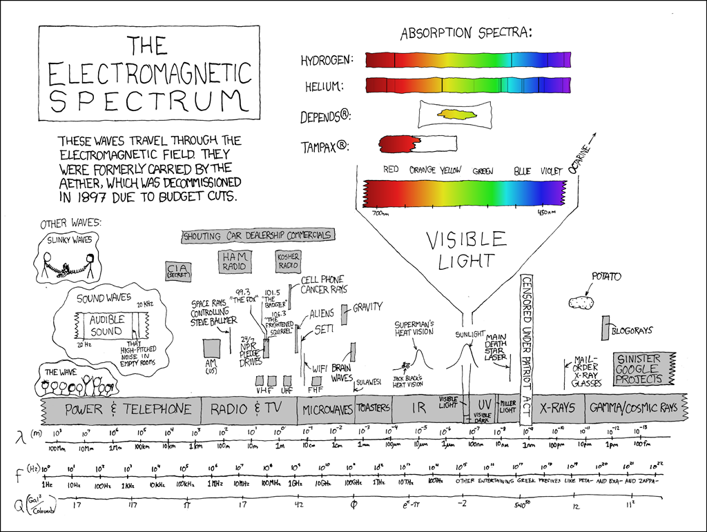
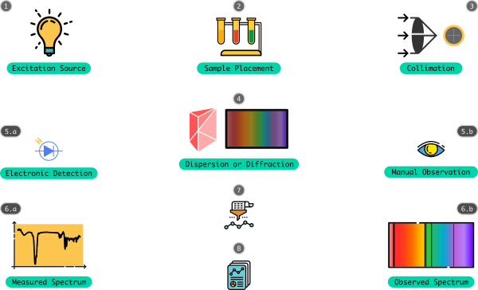
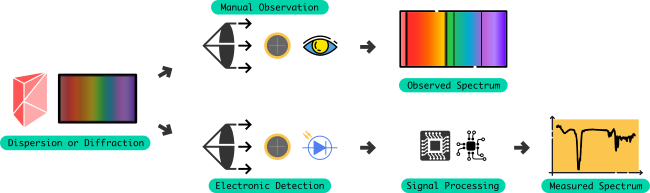

This is not a full fledged tutorial or history on spectroscopy and its awesomeness, rather i would
only like to share what i have learned, interpreted and understood in my experience and exploration.
The following contents might subject to change with my change in knowledge and further experience.
@/.\ ----+----------------------------+
/ \ | Beware, not to push your |
| subjective views ! |
+----------------------------+
+--------------------------+---- ( me )
| Yes, thanks for caution |
+--------------------------+
Why am i writing this ?
I feel that even though spectroscopy along with the rise of optics, telescopy, radio, space exploration, material science,
food science, etc.... have penetrated deeper and wider into laboratories of massive institutions and instrument manufacturers,
it is been widely not democratized like any other awesome scientific instruments available. This article can be seen as a
template of a instrumentation engineer and lover, who screams about non-democratizing attitude of scientists, laboratory
engineers and instrument makers, and its associated knowledge sharing model, business model, etc... Apart from that, i would
generally explore and explain what i have learned and what are all the potential ideas that i have interpreted for the past
4+ years.
Even with so much little experience with spectroscopy and associated fields, i could come up with few awesome ideas,
that are pragmatic and at the same time felt the necessity for democratizing it, like few other people here and there
in the science and technology realm. One thing that still amuses me, is why cant former, "wiser", better experienced
engineers, scientists, developers, interns, students, could democratize it ?
Is it a stigma among them ?
Is it the public & perish thing ?
Is it the patent systems ?
Is it the economic & business models ?
Is it they dont look at real problems ?
Is it they work only for organization benefit ?
Is it they just do their "job" ?
Is it because they are isolated ?
Is it because, mind bogged down by the complexity ?
Is it, they have lost their explorative spirit ?
Personally, i like spectroscopy next to bicycling & bicycles. For me it is next awesome thing at equal to bicycles.
I love both of them and i read somebody quoting a similar thing in some book. However, i have always had it close
to my heart. It helped me to better understand about electromagnetics, wave propagation, mass - energy interaction,
and other awesome stuff that deal with energy & mass in physics. Even though when i am not good in math and programming,
this love have made me learn about many things which i am previously completely ignorant about. Somehow, it has
made me an anti-ignorant and made me more rational. I am fortunate, that i have worked with good mentor & colleagues
in a public laboratory. They have supported me morally, & economiclly, eventhough when we had debates and fights on
some stuff. On the whole, i learned a lot theoretically, but only less than that pragmatically.
What is Spectroscopy actually ?
It is all about understanding one of the fundamental energy form of nature - the electromagnetic energy. Specifically
the subject completely devotes to understand the interaction of energy with the mass, which together constitutes all
the elements of nature. Yes it deals a lot with quantum physics and electromagnetic wave theory, why materials behave in a
certain way when they interact with EM energy, what are the explainable reasons behind it etc. For a brief introduction
about spectroscopy, check out presentation section on it. For me, it
started with why food tasted, coloured and smelled so ?, what is the scientific reason behind it ? why to explore it ?
how to explain it to my folks about it ? These questions have driven be partly crazy and partly rational.

Electromagnetic Spectrum in XKCD's view
Simply any phenomenon which have a periodic pattern of change that can be represented as a wave can be measured in terms of
frequency and with collection of bunch of frequency we have a spectrum. The spectrum can be measured by a number of
means that varies depending upon the energy we are dealing with. The thing about electromagnetic spectrum however, is that
they are omnipresent. They present wherever matter is.
Soon, i have realized that spectroscopy is not just related with food, and my world view have significant changed from
entity & reduction oriented towards connection and holistic relations. May be because of my expansion of understanding and
interpretation critically changed. It had a rich history like any other field in science, and i have finally could
feel the non-reductionist approach in understanding science and started asking deeper questions myself. This while
keeping part of me deeply abstract, while at the same time, other part of me deeply tied with reality around me.
Ideas to solve problems that i felt, through spectroscopy started populating in my head. Without any proper means of
expressing it, they started clouding. I couldn't understand why the system mandates a Ph.D to innovate and discover
something scientific. I believe, that science is science no matter the academic degree one possess. I felt deprivation
of liberty and freedom in it. But my love of spectroscopy have never decreased and infact encouraged me to pursue
my own research independently, even if i am miserably going to fail.
Instruments
Instruments in association with spectroscopy are diversed, and vary widely in their design, construction, because of various
technological constraints. There is no signle instrument that could cover the whole electromagnetic spectrum. There cannot
exist a single ship with which we shall explore all of the ocean. These instruments were grouped based on the spectrum
they are capable to explore. Within each group, several types of instruments were innovated with varying architectures and
design. Thus a Spectrometer in general is an instrument that measures the spectrum - a part of electromagnetic
spectrum. It is also called as Spectrophotometer when the instrumentation is designed based on counting the photons
within the chosen spectrum. All of these instruments tend to derive quantities from the measured status of the spectrum
sensed from a particular material in terms of wavelength of the electromagnetic wave (could be visible light, IR, UV, X-ray,
Radio...).
Many derived quantities & applications are possible, such as:
Distance
Density
Concentration
Vegetation
Temperature
Colour
Mass
Molecular Structure
Communication Channel
Aerial & Satellite imaging
...
Democratization
Whether it is wave based or photon count based, these instruments are essential for a range of requirements such as
planetary exploration, mineral evaluation, material study, food inspection, ... spanning widest range of fields. Even
with its spread and penetration, democratization effect is very very less. Most of the instrument design are patented,
which have devasted the democratizing effect. Patent & Copyright systems, have made it sure that the design stay within
the manufacturer control, which further hanged the propagation of knowledge required to make such useful instruments
to the people. Whether it is possible to create an instrument or not by the commons, it is not a scientific process, to
block the propagation of knowledge just becuase something is not practically possible.
Right after 2009, with the evolution of Free Hardware, Open Data, Open Access evolution, following & adapting a similar
philosophy from the Free Software evolution, a few of the projects by some of the communities and individuals are
contributed for designing a spectrometer. While scientists and engineers who have worked for years in making such
instruments especially in space programs have not made their designs transparent, pointing their reasons to "confidential
matters" & "patents". Some of the recent projects which have a goal towards in making such instruments are :
Still DIY community and hackers projects like the above are still a long way when compared to the commercially available
ones that have occupied scientific laboratories. One reason, is that these laboratories have stopped making their own
instruments - kind of laziness and started procuring proprietary instruments & devices - imprisoned knowledge.
DIY individuals & Community projects are still great way of making their instruments transparent, available and accessible
to commons with suitable propagatable licenses. However, availability of necessary infrastructure of peer production,
are not available in many places around the world - primarily because of the lack of awareness about the idea of peer
production itself. With designs being shared and improved collaboratively using internet and collaborative platforms
built on it, it is very likely that the quality of these instruments will surely be improved & will surpass the performance
and quality of "commercial & proprietary" ones.
Fight for Purity !
Democratization is not only effective in designs of such instruments, but also it protects the violation of data derived
from them. Previously, even with proprietary instruments they are mechanisms that are imposed by the manufacturers, who
control the data measured by instrument in the user's field. These manufacturers have started providing data and information
based service through internet - illustrating as a perfect reason to further reduce the scientists', engineers', spectroscopists'
work. Thus this shows the relation between monopolization of knowledge by patenting the design and imprisoning the information.
I believe with open systems in science and technology, soon the instruments will be widely available to commons.
Soon commons deserve to do science. It will be progressive in reality when science is done by commons than by paid and honoured
scientists who would work for money under a organizations fund, signed with non-disclosure agreements and licenses, and who
themselves mostly like to patent the innovations they make. They are deserved to be dishonoured and removed from the
scientific process itself. There is no philosophy in their science. In fact, their philosophy is descience. I may be technically
crossing my boundary here, without any formal proof. I do not intend to claim that all scientists in institution labs are
like under such regime, but as far ask i know, they are not much different from a capital owner or a subjugated factory worker,
& most of them do science, without ever knowing what science is about. They do have high degree of specific knowledge, which is
their primary curse. As they are ignorant about other systems, and with no thought process of Systems Thinking, they
fail to apply science for other problems and fields. This makes them non-explorative. This makes them un-managed work horses.
They become pure dopamine chasers.
DIY
Well from the above list of DIY contributions, one could easily learn some basic concepts and construction pattern of a typical
spectrometer, and does not much differ from our high school spectroscopy physics experiment that we would have played
with either a prism or a transmissive grating. Before going into how DIY can be done, one has to know what are all the
fundamental necessities for a spectrometer ?. The answer depends upon what spectrum we are interested upon. Although, many
factors for the construction design share similar ideas and principles. A spectrometer - typically the one represented for
IR, Visible, UV, spectral region, and that provides us with interesting data, for further analysis are specified with :
Resolving Power
Dynamic Range
Spectral Bandwidth
Spectral Resolution
Slit width
Spectral efficiency
Wavelength selection
Range of Photon count
Sensitivity
Accuracy
Usually, a spectrometer of such type, will have a construction architecture that vary widely depending upon the spectral
region (wavelength) for which it is constructured. Many a times a straightforward approach for wavelength selection
or dispersion of energy would make the instrument larger and bulky. Innovative architectures that are used in optics,
are used heavily in constructing relatively small spectrometers, without compromising its efficiency. Those who designs
a spectrometer and constructs will see that the requirment for a analytical instrument and a communication device are not
much differed. For instance, a AOTF based crystal can
be used to construct both a high speed spectrometer as well as WDM
for optical communication.
There are lot of individuals who do CD/DVD based spectrometer, by carefully stripping the "reflective" part from the substrate
and using it as the grating. However, we have to remember, that grating is one of the fascinating device, like any other optical
device, which is mostly handmade once, and nowadays are developed on a substrate with required pattern. Making a grating by
hand is going to be tough, without any prior experience and expertise in it. Further more, it either requires grating
maker or a manufacturing facility. There is still lack of a good handheld/desktop grating maker even as an idea.
However, before trying such an attempt we must make sure other stuff are ready and in practice, to document the whole process
transparently and in scientific way that allows for peer reviews, as Hackaday.io does.
The awesome thing is, it severs as a common point for collaborative peer review, documenting, & practicing platform for
hackers philosophy.
Dispersion by a Prism
By understanding this, one would already get fascinated about how and why these prisms, and gratings disperse light in a such
a flamboyant way, why the hell do diffract ? what is special about them ? Atleast, i got so crazy about it when i first
properly understood about it myself. Understanding it, would surely makes one fall in love with the theory and with the
instrument itself. This fascination would surely push oneself to read about its history and learn even more about how they
come into existence, and some times go beyond their mathematics to understand why it is done so ?
Constituents
A spectrometer usually consists of the following modules that are essential for construction. The brain of a spectrometers is
usually a dispersing or diffracting element that exposes the band of wavelength which are measured by sensing manually or
using electronic instrumentation techniques. This brain nowadays are typically abstracted with innovative data acquisition,
wavelength selection, processing, analysis, report generation features, and in the near future these information technology
modules will soon be tied up with machine learning capabilities that will help the analysis to a wider level.

Modules of a typical Spectrometer
Required Architectures:
Any design will have few or more architectures, which makes the overall design innovative and really useful with good
reasoning balances. Designing any instrument is not a skewed one. It does requires architecture, and spectrometers do
have a highly interdisciplinary approach as far as reductionst science and technology is considered. On the whole, the
instrument mainly consists of :
Optical device Architecture
Electrical device Architecture
Computing Architecture
Information Architecture
The excitation source represents the source of our spectrum which we wish to play with. The sample/material under test,
is either shined before or after diffracting the composite source. If the placement of sample is configurable, then it would
be really awesome for the user. Furthermore, the type of sample, also matters of analysis. Arrangement of optical modules
are governed by optical architectures like Czerny-Turner, Fastie-Ebert design configurations. Conversion & count of sensed photons
of desired wavelength after diffraction & its interaction with the material through reflection or transmission, quntifying
the count, transferring the measured count to a safer location are governed by the electrical architecture that involves usage of
data convertors, microcontrollers, memory devices, communication interfaces.
Furthermore, the recorded data, have to be filtered, pre-processed, analyzed using mathematical models, formulaes,
analysing frakeworks, visualizing them and generating reports from them involves using architectures from computing and
information technology. Usually data acquisition, encapsulation frameworks, stacks & services; algorithms for efficient
analysis are deployed to make sense of the data.
Generic Process of Measurement
What do we have now ?. We are literally equipped with good computing power, performing computing resources,
necessary data processing libraries, data & information analyzing frameworks and services, data sharing abilities &
networks, required licenses that ensure knowledge propagation while empowering the creators, contributors & users to
circumvent the monopoly and stealing effects. The essential stuff that are required to fill the gap are :
Optical design & Construction setup
Sensor, Actuator (transducer) interface
Computing, Controlling & Communication units
The process involved in using a spectrometer (or) spectrograph (or) spectrophotometer can be deconstructed into following simple steps:
Having an energy source that fits the region of exploration or extends it, need to be excited
properly, which determines the strength of the photons that are to be interacted with the
material later. Nowadays, with the advent in power electronics, these spectral sources can be
easily regulated, to control their photon output, heat loss, actively control heat dissipation,
etc.. If the instrument consists of movable parts such as in monochromators, then they need to be
aligned perfectly as far as possible, that needs active feedback to reset to their default positions
and angles.
Usual optical modules involved
Construction design and physical dimensions of the optical devices and interfaces decide the
signal quality and reliability of the instrument. Excitation sources like, Tungsten halogen lamp,
Incandescent lamps, Fluorescent sources, LASER's, LED's etc, are currently used in various applications
that implies necessary maintenance procedures, so that their spectral performance would be maiantained
relatively constant with time.
Wavelength selection is possible only because of the dispersive / diffraction / interference
element used, that actually deconstructs or splits up the composite electromagnetic energy (ex: white light)
into its sub constituent wavelengths (with specific energies). This can be analogously understood as
the living proof of a fourier transform, which states that any given complex signal can be written as
sum of fundamental and harmonic sines and cosines. Thus the wavelength dispersion can be simply
modeled as a transformation mechanism, that always does this.
Core Organ of the Spectrometer
Dispersion Mechanism:
Dispersion is basically, very much similar to the kind of awesome rainbow phenomenon we see during
drizzling in sky. Usually a Prism of specific material property, dimensions, geometry will
be used, which can only be defined while making a Prism. Thus the dispersion mechanism, and its
associated properties cannot be configured or controlled later. On the other hand, a variety of Prisms
are manufactured to suit diverse set of requirements ranging from Telescopes, Binoculars, Periscopes,
Spectroscopes, ... and several other optic instruments. Knowing how Dispersion
works in general, its relation with the refractive index, dielectrics, and velocity of electromagnetic
wave inspires one to undetstand the relationships between natural phenomenons, which we incorrectly assume
as not connected.
Diffraction Mechanism:
Diffraction gratings of either transmission or reflection type are used typically to extract spectral
information. These gratings are once ruled by hand, and using mechanized systems, which are now replaced
with advanced manufacturing techniques offering higher grating density. However, once made they cannot be
modified later when the requirement arises, as in the case of Prisms. Thus several diffraction gratings
spanning & overlapping spectral bandwidths are manufactured, which can be later coupled for consecutive
spectral measurements. Each individual measurements are then stitched together properly to produce a
wider spectrum.
Interference Mechanism:
Interferometric mechanisms, offer another fascinating way to measure intensity of energy at several
wavelengths, in an interesting way, without using any special materials. However, it equivalently
has construction complexities, that asks for precision arrangement and calibration. The interference
pattern is created by using several interference techniques, that involve clever optical arrangements
ultimately creating a path difference which in turn producing an interferogram (interference pattern).
Knowing about Interferometry, and how it is deeply
related to most of the scientific exploration, proves its impact in optical engineering and allied
instrumentation fields. In fact, with careful construction, interferometers could extract required
information easily, while offering measurement advantages.
Nowadays, Optics have advanced with more fundamental research in material science, which have
facilitated with remarkable materials that are synthesized out of crystal materials that
exhibit unique optical, electrical, acoustical characteristics. Any of these materials when synthesized
with specific characteristics, are used instead of regular prism or grating, to facilitate active
control of wavelength selection - electronically. As the conventional prism and grating once constructed
could not be configured even within the required spectral bandwidth. Whereas, these special devices
which might be of AOTF,
LCTF,
EOM, can provide flexibile control
and easier wavelength selection, without any requirement of rotation/moving parts in the instrument, that
effectively reduces the error due to wear, tear & vibration.
After warming up the optical section, which is controlled by the electrical interface, now the
electronic control and measurement unit, can either parallely count the photons they sense, or
sequentially scan the spectrum by rotating or controlling the actuating element like motors which
in turn rotates the dispersing or diffracting element. The transducer used for sensing the energy
is of prime important, as they decide the measurement accuracy. The transducers has to match the
spectral bandwidth of the dispersing element, i.e, our objective exploration space.
Analog signal processing unit and Digital signal processing unit, could take care
of filtering the noise from the electrical signal, from the transducer unit. Using proper
data convertor, decides the numerical precision of photon count, which is a measure of
particular wavelength intensity. Depending upon the type of optical interaction (transmisison
or reflection), the spectral measurement will be changed to different record setting.

Signal processing (Analog & Digital) & Control for Measurement
Measurement, involves with data acquisition, controlling back the diffraction if the active element
is electronically controllable through an actuator unit, like a steeper motor or piezoelectric
device, which in turn influences the minimum wavelength resolution to a certain extent. Uncertainty
in controlling the wavelength selection, decreases the accuracy of the instrument. Even before acquiring
the data, the SNR (Signal to Noise Ratio) in the signal chain has to be improved. Signal integrity has
to be preserved. Measurement makes sense only when we know the accuracy in it.
While analyzing a spectrum which cannot be sensed by human eyes, they are usually measured, and then
transformed to the spectrum which we understand. Instead of such contradicting use, we can simply
record wavelength internsity per wavelength numerically. These numeric data, needs to be stored safely
for offline analysis and processing. Also based on the deployed applications, online measurement
coupled with powerful online processing are necessary in real-time situations.
After recording the spectrum, of a test sample/material, it needs to be pre-processed
to remove the artifacts added because of the instrument configuration, apply statistical
filters, and prepare it for further spectral analysis where advanced transformations
and statistical analysis would be deployed upon the data to reveal the information that
makes sense and also to enable the revealed information to connect with other informations
that provides the necessary feature or application.
With Free & Open Source software rich analytical libraries can be built to suit the
spectroscopy requirements. Usually, a mathematical sub domain called as Chemometrics
are mostly used to process the spectrum providing various statistical features, that help
the user to group, classify, register, identify a particular sample. Beautiful applications
of such mathematical and statistical treatment is that highly interdisciplinary subjuects can be
connected, which further reveals associated information, such as identifying the principal
molecules in the material and help determining the overal molecular structure in a probabilistic
manner.
Still only one type of spectrometer data cannot provide the complete detail of the material. It is
just one view, & interpretation from a particular angle. Thus, with more and more widespread use
of other spectroscopy like, NMR spectroscopy, Mass spectroscopy, Raman Spectroscopy, + other analytical
methods, provide multi modal information, which needs to be fused, abstrated to provide a multi-faceted
information, from which an almost view can be extracted. There are several gaps that are to be
filled in Chemometrics, Cheminformatics, Bioinformatics, Structure identification, Prediction, etc..
My Contribution & Criticism:
As you know now, that i have worked in a public funded research organization in India called CSIR (Council of Scientific &
Industrial Research) - for which i am partly satisfied and partly left scars in me because of its organizational
attitude that sounds more distance, remote and far cry from actual scientific temper - atleast that is what i have
experienced for the past 3.5 years. I mean, folks (scientists, engineers, research interns, project engineers, students)
over there are individually good, but as a group caught in making gadgets for industries nowadays. I do not want to question
the organizations intention to serve the medium, small scale or even bigger and massive industrial systems, but always
felt they are stuck with that alone, and never got time to think about common man and the necessity for making technologies
that not only address day to day necessities, but also in a open way. It has the potential to be instrumental in making
the technology democratic, scalable, far reaching.
As much as i see, as a listener, i came to know the bitter truth about how folks over there are still in the 60-70's style
of securing the innovation with patents. This creates friction between the peers altogether and stagnates the
overall progress and thus limited the proof of knowledge in action. I cannot prove and need not want to prove all the
internal cheaper politics myself here. That will be unwise for me to attempt. Every organization lingers with such negative
functions, but it might be satisfying to look at the brighter side, except for which i cannot find one rationally. All i
can see is the one massive scientific community -- which they calls themselves - became consuming grounds for massive
multi-national business, that make technology, tools & instruments that aids their research and development work - which
is itself is not a problem, but brings long term complications and deterioration in knowledge propagation through public
service. Nowadays, only a very few seems to understand about science & its relation with socio-economic-political
sphere. Only a few seems to accept the complexities involved. More still stick to the deterministic dogma.
Most of them nowadays use free software, open hardware, open source solutions, just as an alternative for high
cost technology. Only a few could digest the reality and community effort behind it. In this view, my common sense
interprets and visualizes them as only free loaders. The saddest part is most of them seems not to care about
scientific publication, its openness, community participation, philosophical discourse, licensing, distribution,
transparency, credit systems ... In such an environment, when student comes into the picture, they would most probably
oriented towards either pro-ignorance or pro-rebel attitude. These indicates the groups stubborness to not update thier real
knowledge in a scientific way. It seems, as though the whole movement stuck in a time frame.
@/.\ ----+-----------+
/ \ | Enough ! |
+-----------+
+----------------------+---- ( me )
| Was expecting you :) |
+----------------------+
I started in CSIR as a project engineer, who would be usually employed to support the research team in one of the
labs of the organization, which would get funding from the organizational finanical and administration cloud. As
a lover of free software, open hardware ethos, some how i have managed to inspire my lab senior and colleague.
I think i have made a small impact which they would least forget about my effort. I hope. We do love making instruments
and software associated with optics and non-destructive testing in general. I am ZERO about them, and still almost the
same. But with my interest ranging from embedded systems, to instrumentation, i pitched my actions which have certainly
lead me to learn about the instrumentation of spectroscopy and specifically towards AOTF, an awesome thing,
that enables regulatable/tunable Infra red spectral diffraction & wavelength selection. For the first time in my life,
i felt almost magical, as i came to realize, that simply we are controlling direction of light propagation, with
sound. How cool it can get than this ???
After my service as project engineer, i again worked as research intern, during which my knowledge expanded
and erupted multi fold, learning about far reach areas of science and its interaction with other studies and fields.
Even though i felt little eccentric to my colleague and senior, i am ok with it, as i realized my mind is in a soupy
state for which it behaved mostly confused, dissonative, depressive, some times non-focus & hyper active, ... which
made me travel from a superlative thought process to feeling the reality about the systems i am living and part of.
This made me think about how my contribution would be useful atleast to my folks and friends, as far as i can reach.
Making instruments, and softwares are ok, but it is underspecified to solve a problem that i experience, and it
seems that i can see a way to solve it. But contradictorily i cannot solve it. This made me crazy. I mean you can see
the path, but cannot walk on it.
Before even walking the path, i realized that i had to cross through layers of thick walls, either by breaking it or by
bending its subjugation. Oh yes... i tried to publish my works in a series of six to sever papers. With no funding at
all, my team could not afford to publish the articles in a decent open access journal. I was literally waiting
for a escape route, but stayed because of my attachement with my senior mentor. This added fuel to my cognifive
dissonance pressure. However, with so much i learned, i realized the synthetic distances between what science is capable
of, what critical thinking humans are capable of, what socio-economiic-political stituations tamper such capabilities.
Realized why smart people running away (expatriating) to other nations. But it sounds silly and not a solution at all to
me. It does not felt like a solution made by a critical thinking person - more it sounded like a feudal thought to me.
Technically what have i done ?
I have first tried to interface the existing electronic control board with the AOTF & RF unit, and measure the sensed
wavelength intensity. This electronic board was first give to me with a proprietary license and with the availability of
only a proprietary software to program it + a proprietary sotware to construct a suprervisor system to control
the spectrophotometer instrument as a whole. I have managed to do it and with the help of previous student contributions
towards the project, i could easily finish it up earlier. During this period, i have learned fine soldering, bare metal
programming with C & assembly sometimes. Honestly, i gave me a intellectual satisfaction to see the machines
working as expected. Still, learned about free and open source softwares and stacks more from other student collaborator,
who helped me think interms of networks and webs.
One fine day, we decided to equip the core spectrophotometer system with open hardware, an arduino - which is personally
affordable, (as our team had no funding properly from the cloud). We tested, and our projects are hosted in bitbucked and
github. My student collaborator have tried to share about versioning control systems, which i perfectly udnerstood as
systems theory, but sucked when it comes to practical usage. It took some time to get a hold of it by myself. With
project source published online, and licensed in GPL it felt like a good leap. We also fused
LaTex to the documentation and publication works, along with Gimp & Inkscape for illsutration purpose.
Scavis for scientific data visualization and analysis, Python, R for further statistical analysis,
Proprietary systems and the investments my team once made in them are literally in the dust bin now. Such actions, mustered
me courage & confidence to actively participate in communities and their discussions without any hesitation and
guilt.
However, i still had to face the "security through obscurity" & other feudal, religious dogma from my other colleage who
loves to work in a Microsoft set of tools and technologies. I remember him to switch to use open sourced community
efforts like OpenCV, and the best thing is he used to criticize its open ness and learn by contributing and coding
strategy. In short, he could not handle all the knowledge that are transparent that are right before his eyes. He is
crying for a microsoft style abstraction even in data structures without ever even rationally trying to understand the
reasons behind the programming and stuff.
Are you interested in making a Grating ?
If you really like spectroscopy, and the core devices, and wondering about whether it is possible to atleast
ideate in first place, then please take a look at the post, which
i have tried to express my ideation, while standing on the shoulders of the communities that existed before me and will
after me.